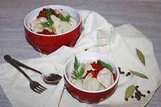

- oʼram "Kulinar" kievcha kotletlarni oling. Kotletlarni muzdan tushirmang.
- Chuqurroq tova yoki qozonga kotletlar
- bemalol suzib yuradigan darajada yogʼ quying.
- Yogʼni qizdiring.
Kiyevcha kotletlar va kartoshka fri
Reja:
|
Damashniy chuchvaralar |
|  |
"Domashnie" chuchvaralari; |
Kiyevcha kotletlar va kartoshka fri |
|
|
Kiyevcha kotletlar va kartoshka fri |